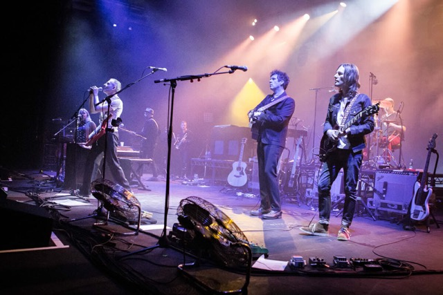
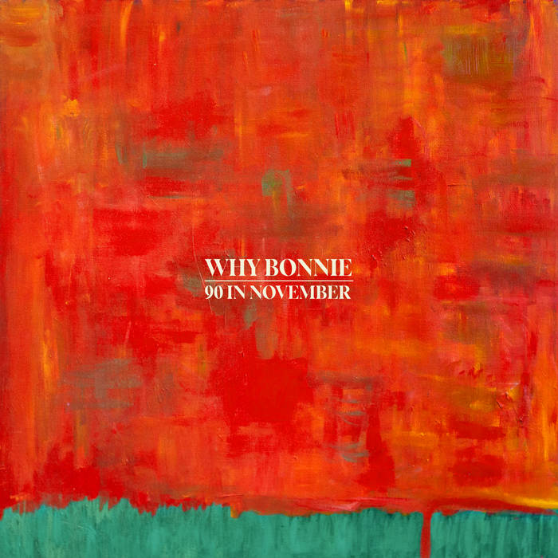
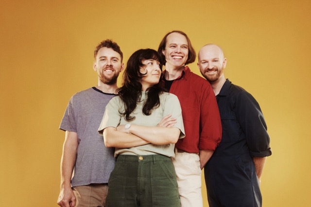

Gwen's Good Music
The Heartbeat of Indie Rock
Welcome to Gwen's Good Music – The Heartbeat of Indie Rock. Indie rock isn't just a genre — it's a movement, a community, and a sound that pulses with creativity and freedom. Here at Gwen's Good Music, we celebrate the raw energy and authentic spirit of indie music. Whether you’re discovering new artists, revisiting classic albums, or diving deep into the stories behind the music, you've found your home. Explore, connect, and get inspired by the world of indie rock.

What We Offer:
- New Music Discoveries: Stay up-to-date with the latest indie releases from both rising stars and established favorites.
- Album Reviews: In-depth reviews, from debut EPs to full-length albums, written by passionate indie enthusiasts.
- Artist Spotlights: Get to know the faces behind the music through our exclusive interviews and artist features.
- Concert Coverage: Your go-to source for indie rock tours, local shows, and festival roundups.
- Music Videos & Playlists: Curated playlists and official videos to keep you rocking all day long.

